Unit 1
Knock Down The Nets
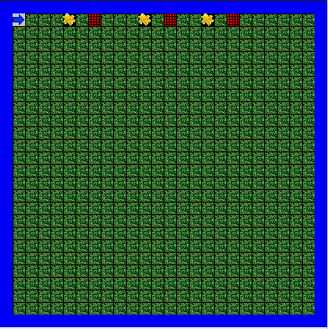 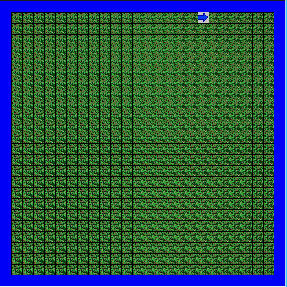
Description:
Clear the top row of the three islands and stop at the position where the last fence was.
Concepts Learned:
- Using hop() command
- Using pick() command
- Using toss() command
Plant a Diamond
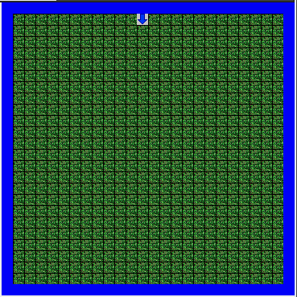 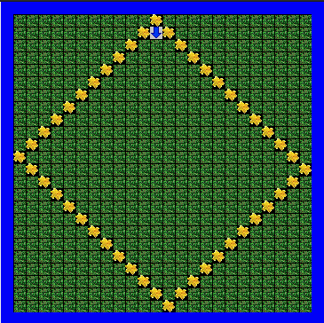
Description:
Plant a diamond with flower using your jeroo
Concepts Learned:
- Using repeated commands
Unit 2
Make A Box
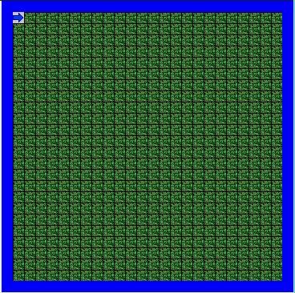

Description:
Create a single method that allows your Jeroo to drop a flower and then move ten steps. Make another method that calls the drop a flower and move ten steps method. Once finished the Jeroo should make a box pattern with flowers in each corner.
Concepts Learned:
- Creat a jeroo method
- Call out a jeroo method multiple times
Great Eascape
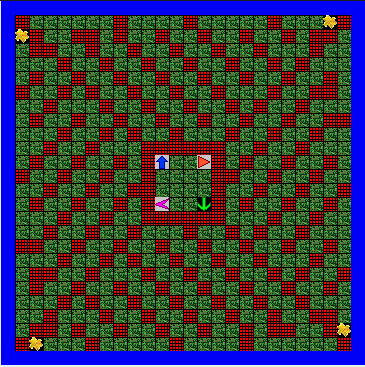 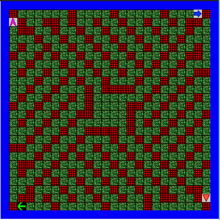
Description:
Create a single method that allows your Jeroo to navigate through the complex maze and bringing the Jeroo to a stop ON the flower and pick it for lunch.
Concepts Learned:
- Creating multiple jeroos
- Use the same method for all of your jeroos
Unit 3
Pinball's Journey
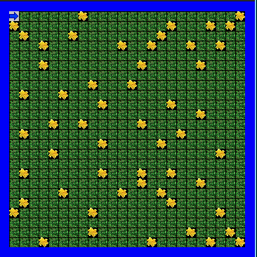 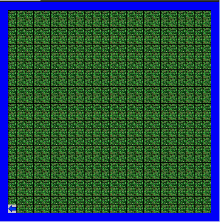
Description:
Create two methods that would allow Pinball to pick all flowers and come to a stop before jumping off the island into the water.
Concepts Learned:
- Using if statemenet
- Using while loop
- Using boolean methods
LockUp
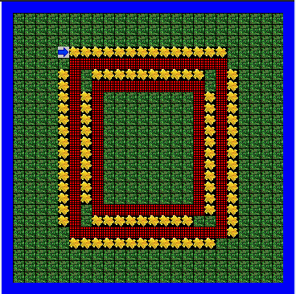 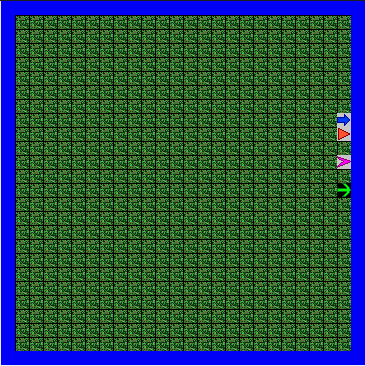
Description:
Remove all the flowers, remove all the fences, and then make the run to freedom.
Concepts Learned:
- Using your jeroo method multiple times using while loop and if statement
Unit 4
Alley Run
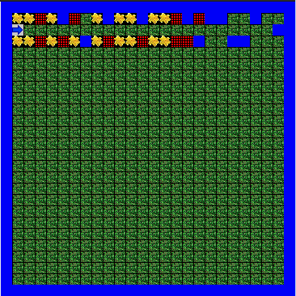 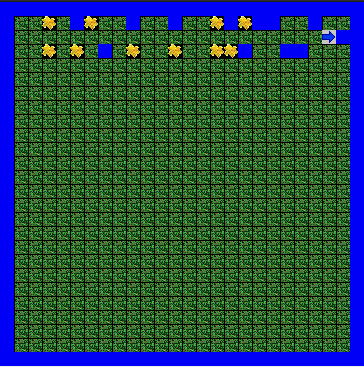
Description:
Pick all flowers that it finds, it must replace each net with a flower, and anytime it finds water to the left or the right, it must plant a flower on the side opposite the water. After all of the various conditionals are met, the jeroo should hop once in the direction it is currently facing.
Concepts Learned:
- Using multiple jeroo actions with while loop and if statements.
Spiral Maze
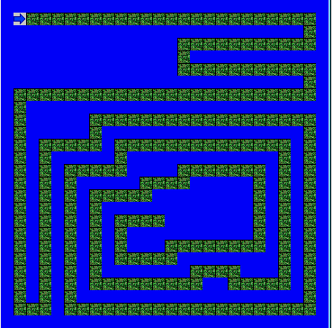 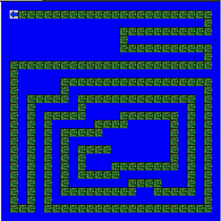
Description:
Your Jeroo must make its way through the entire maze and stop before jumping into the water. You should be able to make the Jeroo spiral in to the center and then spiral back out to the start.
Concepts Learned:
- Using loop with if statements